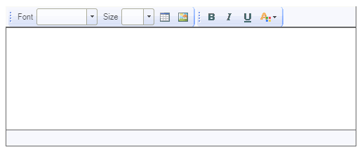
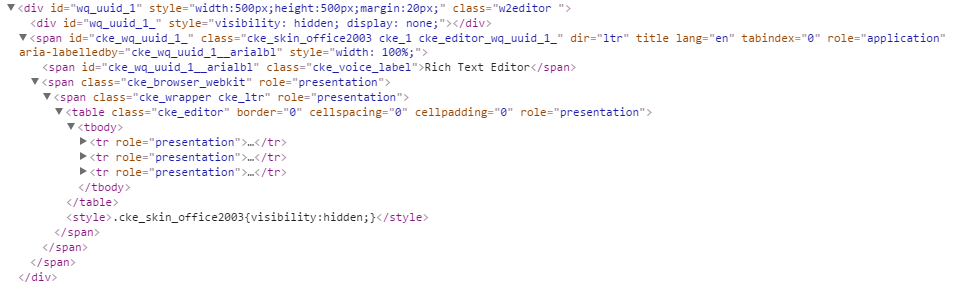

15.Editor
수정 일자 버전 (SP2)
WebSquare5 Studio : 20180117_1349_x86_B
WebSquare5 Engine : 5.0_2.2936B.20180114.155240_1.5
오픈소스인 CKEditer 를 이용한 컴포넌트이다.
15.1Property
Property | Description |
|---|---|
id | 컴포넌트의 ID로 전역객체로 할당되며 script에서 본 id로 컴포넌트에 접근이 가능하다. |
imageLoadURL | 업로드된 이미지를 조회하는 URL(servlet), 조회하는 Servlet은 "fileName"을 parameter로 받아서 처리하도록 해야한다. |
language | 언어셋을 설정한다. en: 영문, ko : 국문 |
menubar | editor의 toolbar의 종류 |
style | Editor의 style을 inline으로 추가한다. |
subDir | subDir="test1"라고 하면, websquare.xml(//upload/imgUpload/test1/@value)에 정의되어 있는 경로 업로드 한다. |
tabIndex SP2 | Tab Key를 이용 한 컴포넌트의 포커스 순서로 HTML의 tabindex속성과 동일한 기능을 제공한다. |
transParentDisable | disabled시 색이 변하지 않습니다. |
15.2브라우저 캡쳐화면

[그림 15-1]01
15.3CSS Overriding

[그림 15-2]02
No | Class | Description |
|---|---|---|
1 | w2editor | w2editor은 웹스퀘어 엔진에서 정의된 클래스입니다브라우저가 파싱할때 자동으로 부여 돼며 어떤 에디터를 포함하던지 항상 자동 추가돼는 클래스 입니다. |
2 | cke_skin_office2003 | 컴포넌트가 내부에디터인 ck에디터인 경우 에디터 전체를 포함하는 클래스 입니다. |
3 | cke_editor | ck에디터의 디자인테이블 전체를 포함하는 클래스 입니다. |
4 | cke_top | 디자인테이블 안쪽 ck에디터의 상단 툴바를 전체 포함하는 클래스 입니다. |
5 | cke_contents | 디자인테이블 안쪽 ck에디터의 중간영역인 텍스트 입력부분을 전체 포함하는 클래스 입니다. |
6 | cke_bottom | 디자인테이블 안쪽 ck에디터의 하단 전체를 포함하는 클래스 입니다. |
8 |
| websquare의 style 편집기에서 해당 style을 직접 수정합니다. |
15.4주의사항 및 Tip
웹스퀘어에서 자동으로 제공돼고 있는 에디터는 CK editor 입니다.